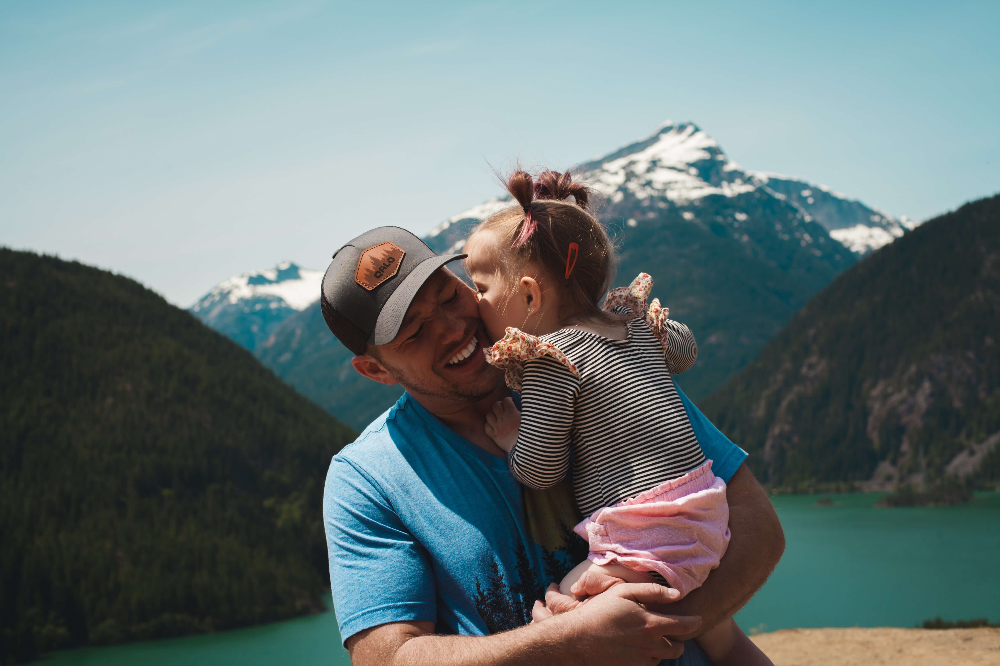
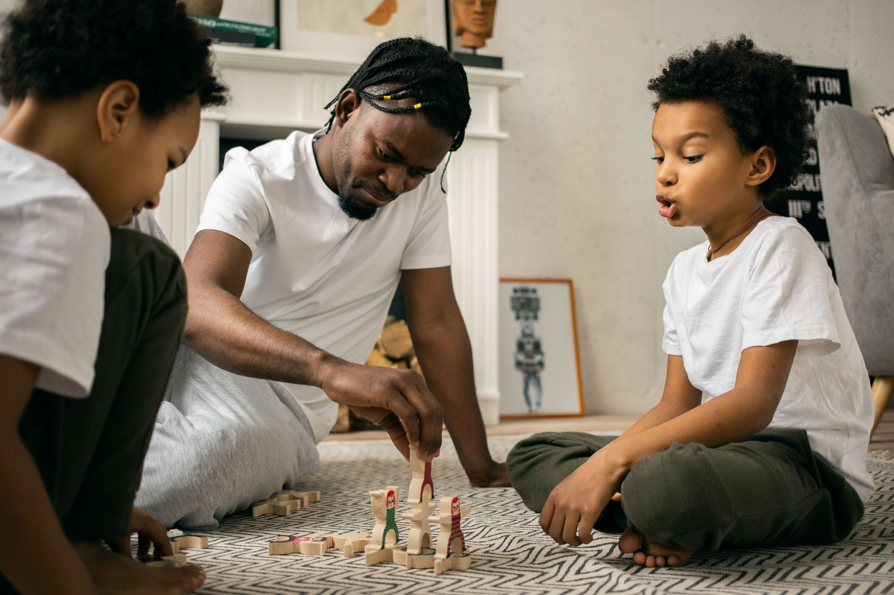
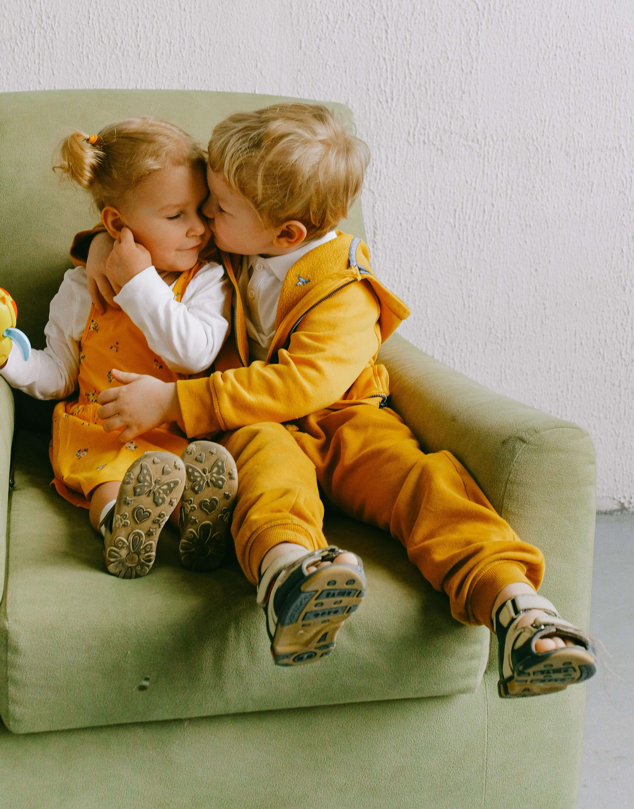

Aussie Kidz Charity assists the families of children under the age of 18 years old that are diagnosed
with a disability.
After years of supporting various well known kids charities, Aussie Kidz Charity was
started in early 2000 by a group of individuals disheartened by watching an increasing percentage of
donations being used to cover overheads instead of going to the ones who need it most, the Kids.


With Aussie Kidz Charity, 100% of the donations received are used for the children, with the running
costs and overheads kept to an absolute minimum and looked after by the Directors and friends.
Since
starting, we have raised over $750,000 and have provided over 150 grants covering mobility aids, walking
frames, specialised clothing and other assistance to these very special kids.
We are focussing on gaining support and donations through the generosity of Directors, individuals,
corporations, estate trusts and through various yearly fund raising activities.These includes the Mercedes
Benz Polo Championships held each September and a Brisbane Businessman’s lunch held each November.
Aussie Kidz Charity has received the Australian Taxation Office endorsement in May 2001 to allow
donations over $2 to be tax deductible.
If you would like to know more about Aussie Kidz Charity, or to
become a member simply email akcsecretary@aussiekidzcharity.org.au or call 0407316144
